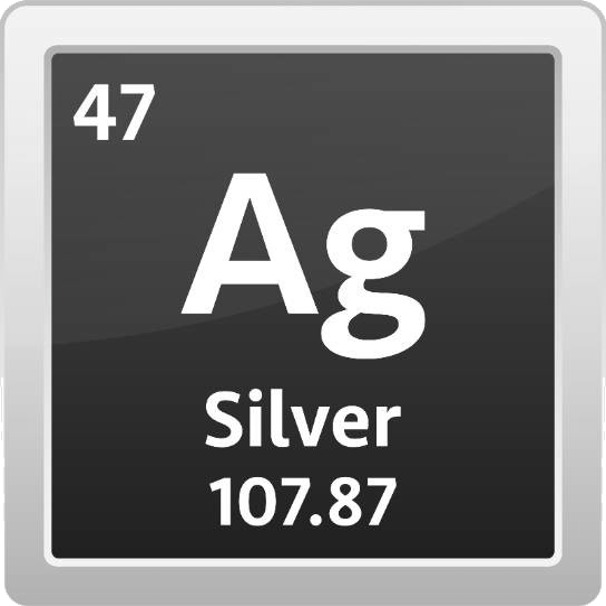

<DOCTYPE html>

<html lang="en-US">
		
<head>
	<meta charset="UTF-8"/>
	<meta name="viewport" content="width=device-width, initial-scale=1.0">
	<link rel="preconnect" href="https://fonts.googleapis.com">
	<link rel="preconnect" href="https://fonts.gstatic.com" crossorigin>
	<link href="https://fonts.googleapis.com/css2?family=Roboto:ital,wght@0,100;0,400;0,700;1,400&display=swap" rel="stylesheet"> 
	<link rel="stylesheet" href="./CSS/styles.css">
	<link rel="icon" type="image/x-icon" href="./Images/icon.png">
	<title>Project</title>
</head>
		
<body>
		
<nav>
	<div class="logo">
		<a href="./index.html"></a>
	</div>
		
	<div class="allcategories">
		<button class="allcategoriesbutton">
			
			<p>All categories</p>
		</button>

		<div class="dropdown" id="dropdown">
			
			
			

			<div class="dropdown-content">

			<button class="drp-btn drp-btn-1" onmouseenter="document.getElementById('dropdownimage1').style.display='block'" onmouseleave="document.getElementById('dropdownimage1').style.display='none'">
			<a href="https://metallicss.com/" class="dropdowna1">Inspiration site</a>
			</button>

			<button class="drp-btn drp-btn-2" onmouseenter="document.getElementById('dropdownimage2').style.display='block'" onmouseleave="document.getElementById('dropdownimage2').style.display='none'">	
			<a href="https://en.wikipedia.org/wiki/Metallic_color" class="dropdowna2">Metallic colors Wiki</a>
			</button>

			<button class="drp-btn drp-btn-3" class="dropdowna3" onmouseenter="document.getElementById('dropdownimage3').style.display='block'" onmouseleave="document.getElementById('dropdownimage3').style.display='none'">
			<a href="https://www.joshwcomeau.com/css/color-formats/" class="dropdowna3">CSS Color Formats</a>
			</button>

			</div>
		</div>

	</div>
		
	<div class="searchbar">
		<form action="https://google.com/search" method="get">
			<input type="text" class="search-data" name="q" placeholder="Search...">
			<button type="submit" class="search">
				
			</button>
		</form>
	</div>
		
	<div class="aboutmenav">
		<button>	
			<a href="./aboutme.html"></a>
		</button>
	</div>
		
	<div class="notifications">
		<button>
				
		</button>

		<div class="notificationsareawrapper">
			<ul class="notificationsarea">
				<li class="notification"><span>Notification 1</span></li>
				<hr>
				<li class="notification"><span>Notification 2</span></li>
				<hr>
				<li class="notification"><span>Notification 3</span></li>
			</ul>
		</div>
	</div>

	<div class="login">
		<button onclick="document.getElementById('loginform').style.display='block'">
			
		</button>
	</div>
	<div class="darkmodenav">
		<button class="darkmodebutton" id="dark-mode-toggle">
			
			
		</button>
	</div>
					<script src="./JavaScript/darkmode.js"></script>
</nav>
						
<div id="loginform" class="loginform">
	<form class="loginform-content animate">
		<div class="xbutton">
			<span onclick="document.getElementById('loginform').style.display='none'" class="close" title="Close">&times;</span>
		</div>
		
		<div class="loginwindow">
			<label for="username"><b>Username:</b></label>
			<input type="text" placeholder="Enter Username" name="username" required class="username">
			<label for="password"><b>Password:</b></label>
			<input type="password" placeholder="Enter Password" name="password" required class="password">
			<label><input type="checkbox" name="remember"><span class="remember">Remember me</span></label>
			<button type="submit" class="submitbutton">Log In</button>
		</div>
		
		<div class="forgot">
			<a href="#">Forgot password?</a>
		</div>
		
		<div>
			<button onclick="document.getElementById('loginform').style.display='none'" class="cancelbutton">Cancel</button>
		</div>
		
		<div class="newuser">
			Need an account?<a href="#"onclick="document.getElementById('loginform').style.display='none'; document.getElementById('signupform').style.display='block' " class="formswitch">SIGN UP</a>
		</div>
	</form>
					<script src="./JavaScript/loginform.js"></script>
</div>
		
<div id="signupform" class="signupform">
	<form class="signupform-content animate">
		<div class="xbutton">
			<span onclick="document.getElementById('signupform').style.display='none'" class="close" title="Close">&times;</span>
		</div>
		
		<div class="signupwindow">
			<label for="username"><b>Username:</b></label>
			<input type="text" placeholder="Enter Username" name="username" required class="username">
			<label for="password"><b>Password:</b></label>
			<input type="password" placeholder="Enter Password" name="password" required class="password" id="password" onkeyup="checkPass()">
			<label for="confirmpassword"><b>Repeat Password:</b></label>
			<input type="password" placeholder="Enter Password" name="confirmpassword" required class="confirmpassword" id="confirmpassword" onkeyup="checkPass()">
			<div id="message"></div>
			<label><input type="checkbox" name="remember"><span class="terms"> I have read and agree to the <a href="">privacy policy</a> and <a href="">terms of service</a>.</span></label>
			<button type="submit" class="submitbutton" id="submitbutton">Sign Up</button>
					<script src="./JavaScript/passwordmatching.js"></script>
		</div>
		
		<div>
			<button onclick="document.getElementById('signupform').style.display='none'" class="cancelbutton">Cancel</button>
		</div>
		
		<div class="newuser">
			Already a user?<a href="#" onclick="document.getElementById('signupform').style.display='none'; document.getElementById('loginform').style.display='block' " class="formswitch">LOGIN</a>
		</div>
	</form>
					<script src="./JavaScript/signupform.js"></script>
</div>

<ul class="checkbox-wrapper">

	<li class="checkbox">
		
		<div class="checkbox-wrapper-1">
			<input id="example-1" class="substituted" type="checkbox" aria-hidden="true" />
			<label for="example-1">Checkbox</label>
		  </div>
		  
		  <style>
			.checkbox-wrapper-1 *,
			.checkbox-wrapper-1 ::after,
			.checkbox-wrapper-1 ::before {
			  box-sizing: border-box;
			}
			.checkbox-wrapper-1 [type=checkbox].substituted {
			  margin: 0;
			  width: 0;
			  height: 0;
			  display: inline;
			  -webkit-appearance: none;
			  -moz-appearance: none;
			  appearance: none;
			}
			.checkbox-wrapper-1 [type=checkbox].substituted + label:before {
			  content: "";
			  display: inline-block;
			  vertical-align: top;
			  height: 1.15em;
			  width: 1.15em;
			  margin-right: 0.6em;
			  color: rgba(0, 0, 0, 0.275);
			  border: solid 0.06em;
			  box-shadow: 0 0 0.04em, 0 0.06em 0.16em -0.03em inset, 0 0 0 0.07em transparent inset;
			  border-radius: 0.2em;
			  background: url('data:image/svg+xml;charset=UTF-8,<svg xmlns="http://www.w3.org/2000/svg" version="1.1" xml:space="preserve" fill="white" viewBox="0 0 9 9"><rect x="0" y="4.3" transform="matrix(-0.707 -0.7072 0.7072 -0.707 0.5891 10.4702)" width="4.3" height="1.6" /><rect x="2.2" y="2.9" transform="matrix(-0.7071 0.7071 -0.7071 -0.7071 12.1877 2.9833)" width="6.1" height="1.7" /></svg>') no-repeat center, white;
			  background-size: 0;
			  will-change: color, border, background, background-size, box-shadow;
			  transform: translate3d(0, 0, 0);
			  transition: color 0.1s, border 0.1s, background 0.15s, box-shadow 0.1s;
			}
			.checkbox-wrapper-1 [type=checkbox].substituted:enabled:active + label:before,
			.checkbox-wrapper-1 [type=checkbox].substituted:enabled + label:active:before {
			  box-shadow: 0 0 0.04em, 0 0.06em 0.16em -0.03em transparent inset, 0 0 0 0.07em rgba(0, 0, 0, 0.1) inset;
			  background-color: #f0f0f0;
			}
			.checkbox-wrapper-1 [type=checkbox].substituted:checked + label:before {
			  background-color: #3B99FC;
			  background-size: 0.75em;
			  color: rgba(0, 0, 0, 0.075);
			}
			.checkbox-wrapper-1 [type=checkbox].substituted:checked:enabled:active + label:before,
			.checkbox-wrapper-1 [type=checkbox].substituted:checked:enabled + label:active:before {
			  background-color: #0a7ffb;
			  color: rgba(0, 0, 0, 0.275);
			}
			.checkbox-wrapper-1 [type=checkbox].substituted:focus + label:before {
			  box-shadow: 0 0 0.04em, 0 0.06em 0.16em -0.03em transparent inset, 0 0 0 0.07em rgba(0, 0, 0, 0.1) inset, 0 0 0 3.3px rgba(65, 159, 255, 0.55), 0 0 0 5px rgba(65, 159, 255, 0.3);
			}
			.checkbox-wrapper-1 [type=checkbox].substituted:focus:active + label:before,
			.checkbox-wrapper-1 [type=checkbox].substituted:focus + label:active:before {
			  box-shadow: 0 0 0.04em, 0 0.06em 0.16em -0.03em transparent inset, 0 0 0 0.07em rgba(0, 0, 0, 0.1) inset, 0 0 0 3.3px rgba(65, 159, 255, 0.55), 0 0 0 5px rgba(65, 159, 255, 0.3);
			}
			.checkbox-wrapper-1 [type=checkbox].substituted:disabled + label:before {
			  opacity: 0.5;
			}
		  
			.checkbox-wrapper-1 [type=checkbox].substituted.dark + label:before {
			  color: rgba(255, 255, 255, 0.275);
			  background-color: #222;
			  background-image: url('data:image/svg+xml;charset=UTF-8,<svg xmlns="http://www.w3.org/2000/svg" version="1.1" xml:space="preserve" fill="rgba(34, 34, 34, 0.999)" viewBox="0 0 9 9"><rect x="0" y="4.3" transform="matrix(-0.707 -0.7072 0.7072 -0.707 0.5891 10.4702)" width="4.3" height="1.6" /><rect x="2.2" y="2.9" transform="matrix(-0.7071 0.7071 -0.7071 -0.7071 12.1877 2.9833)" width="6.1" height="1.7" /></svg>');
			}
			.checkbox-wrapper-1 [type=checkbox].substituted.dark:enabled:active + label:before,
			.checkbox-wrapper-1 [type=checkbox].substituted.dark:enabled + label:active:before {
			  background-color: #444;
			  box-shadow: 0 0 0.04em, 0 0.06em 0.16em -0.03em transparent inset, 0 0 0 0.07em rgba(255, 255, 255, 0.1) inset;
			}
			.checkbox-wrapper-1 [type=checkbox].substituted.dark:checked + label:before {
			  background-color: #a97035;
			  color: rgba(255, 255, 255, 0.075);
			}
			.checkbox-wrapper-1 [type=checkbox].substituted.dark:checked:enabled:active + label:before,
			.checkbox-wrapper-1 [type=checkbox].substituted.dark:checked:enabled + label:active:before {
			  background-color: #c68035;
			  color: rgba(0, 0, 0, 0.275);
			}
		  </style>		  

		<span class="credits">#1 by Matthias</span>
	</li>

	<li class="checkbox">

		<div class="checkbox-wrapper-2">
			<input type="checkbox" class="sc-gJwTLC ikxBAC">
		  </div>
		  
		  <style>
			.checkbox-wrapper-2 .ikxBAC {
			  appearance: none;
			  background-color: #dfe1e4;
			  border-radius: 72px;
			  border-style: none;
			  flex-shrink: 0;
			  height: 20px;
			  margin: 0;
			  position: relative;
			  width: 30px;
			}
		  
			.checkbox-wrapper-2 .ikxBAC::before {
			  bottom: -6px;
			  content: "";
			  left: -6px;
			  position: absolute;
			  right: -6px;
			  top: -6px;
			}
		  
			.checkbox-wrapper-2 .ikxBAC,
			.checkbox-wrapper-2 .ikxBAC::after {
			  transition: all 100ms ease-out;
			}
		  
			.checkbox-wrapper-2 .ikxBAC::after {
			  background-color: #fff;
			  border-radius: 50%;
			  content: "";
			  height: 14px;
			  left: 3px;
			  position: absolute;
			  top: 3px;
			  width: 14px;
			}
		  
			.checkbox-wrapper-2 input[type=checkbox] {
			  cursor: default;
			}
		  
			.checkbox-wrapper-2 .ikxBAC:hover {
			  background-color: #c9cbcd;
			  transition-duration: 0s;
			}
		  
			.checkbox-wrapper-2 .ikxBAC:checked {
			  background-color: #6e79d6;
			}
		  
			.checkbox-wrapper-2 .ikxBAC:checked::after {
			  background-color: #fff;
			  left: 13px;
			}
		  
			.checkbox-wrapper-2 :focus:not(.focus-visible) {
			  outline: 0;
			}
		  
			.checkbox-wrapper-2 .ikxBAC:checked:hover {
			  background-color: #535db3;
			}
		  </style>	  
		  
		  <span class="credits">#2 by Linear</class>
	</li>

	<li class="checkbox">

		<div class="checkbox-wrapper-3">
			<input type="checkbox" id="cbx-3" />
			<label for="cbx-3" class="toggle"><span></span></label>
		  </div>
		  
		  <style>
			.checkbox-wrapper-3 input[type="checkbox"] {
			  visibility: hidden;
			  display: none;
			}
		  
			.checkbox-wrapper-3 .toggle {
			  position: relative;
			  display: block;
			  width: 40px;
			  height: 20px;
			  cursor: pointer;
			  -webkit-tap-highlight-color: transparent;
			  transform: translate3d(0, 0, 0);
			}
			.checkbox-wrapper-3 .toggle:before {
			  content: "";
			  position: relative;
			  top: 3px;
			  left: 3px;
			  width: 34px;
			  height: 14px;
			  display: block;
			  background: #9A9999;
			  border-radius: 8px;
			  transition: background 0.2s ease;
			}
			.checkbox-wrapper-3 .toggle span {
			  position: absolute;
			  top: 0;
			  left: 0;
			  width: 20px;
			  height: 20px;
			  display: block;
			  background: white;
			  border-radius: 10px;
			  box-shadow: 0 3px 8px rgba(154, 153, 153, 0.5);
			  transition: all 0.2s ease;
			}
			.checkbox-wrapper-3 .toggle span:before {
			  content: "";
			  position: absolute;
			  display: block;
			  margin: -18px;
			  width: 56px;
			  height: 56px;
			  background: rgba(79, 46, 220, 0.5);
			  border-radius: 50%;
			  transform: scale(0);
			  opacity: 1;
			  pointer-events: none;
			}
		  
			.checkbox-wrapper-3 #cbx-3:checked + .toggle:before {
			  background: #947ADA;
			}
			.checkbox-wrapper-3 #cbx-3:checked + .toggle span {
			  background: #4F2EDC;
			  transform: translateX(20px);
			  transition: all 0.2s cubic-bezier(0.8, 0.4, 0.3, 1.25), background 0.15s ease;
			  box-shadow: 0 3px 8px rgba(79, 46, 220, 0.2);
			}
			.checkbox-wrapper-3 #cbx-3:checked + .toggle span:before {
			  transform: scale(1);
			  opacity: 0;
			  transition: all 0.4s ease;
			}
		  </style>  
		
		<span class="credits">#3 by Andreas Storm</span>
	</li>

	<li class="checkbox">

		<div class="checkbox-wrapper-4">
			<input class="inp-cbx" id="morning" type="checkbox"/>
			<label class="cbx" for="morning"><span>
			<svg width="12px" height="10px">
			  <use xlink:href="#check-4"></use>
			</svg></span><span>Morning</span></label>
			<svg class="inline-svg">
			  <symbol id="check-4" viewbox="0 0 12 10">
				<polyline points="1.5 6 4.5 9 10.5 1"></polyline>
			  </symbol>
			</svg>
		  </div>
		  
		  <style>
			.checkbox-wrapper-4 * {
			  box-sizing: border-box;
			}
			.checkbox-wrapper-4 .cbx {
			  -webkit-user-select: none;
			  user-select: none;
			  cursor: pointer;
			  padding: 6px 8px;
			  border-radius: 6px;
			  overflow: hidden;
			  transition: all 0.2s ease;
			  display: inline-block;
			}
			.checkbox-wrapper-4 .cbx:not(:last-child) {
			  margin-right: 6px;
			}
			.checkbox-wrapper-4 .cbx:hover {
			  background: rgba(0,119,255,0.06);
			}
			.checkbox-wrapper-4 .cbx span {
			  float: left;
			  vertical-align: middle;
			  transform: translate3d(0, 0, 0);
			}
			.checkbox-wrapper-4 .cbx span:first-child {
			  position: relative;
			  width: 18px;
			  height: 18px;
			  border-radius: 4px;
			  transform: scale(1);
			  border: 1px solid #cccfdb;
			  transition: all 0.2s ease;
			  box-shadow: 0 1px 1px rgba(0,16,75,0.05);
			}
			.checkbox-wrapper-4 .cbx span:first-child svg {
			  position: absolute;
			  top: 3px;
			  left: 2px;
			  fill: none;
			  stroke: #fff;
			  stroke-width: 2;
			  stroke-linecap: round;
			  stroke-linejoin: round;
			  stroke-dasharray: 16px;
			  stroke-dashoffset: 16px;
			  transition: all 0.3s ease;
			  transition-delay: 0.1s;
			  transform: translate3d(0, 0, 0);
			}
			.checkbox-wrapper-4 .cbx span:last-child {
			  padding-left: 8px;
			  line-height: 18px;
			}
			.checkbox-wrapper-4 .cbx:hover span:first-child {
			  border-color: #07f;
			}
			.checkbox-wrapper-4 .inp-cbx {
			  position: absolute;
			  visibility: hidden;
			}
			.checkbox-wrapper-4 .inp-cbx:checked + .cbx span:first-child {
			  background: #07f;
			  border-color: #07f;
			  animation: wave-4 0.4s ease;
			}
			.checkbox-wrapper-4 .inp-cbx:checked + .cbx span:first-child svg {
			  stroke-dashoffset: 0;
			}
			.checkbox-wrapper-4 .inline-svg {
			  position: absolute;
			  width: 0;
			  height: 0;
			  pointer-events: none;
			  user-select: none;
			}
			@media screen and (max-width: 640px) {
			  .checkbox-wrapper-4 .cbx {
				width: 100%;
				display: inline-block;
			  }
			}
			@-moz-keyframes wave-4 {
			  50% {
				transform: scale(0.9);
			  }
			}
			@-webkit-keyframes wave-4 {
			  50% {
				transform: scale(0.9);
			  }
			}
			@-o-keyframes wave-4 {
			  50% {
				transform: scale(0.9);
			  }
			}
			@keyframes wave-4 {
			  50% {
				transform: scale(0.9);
			  }
			}
		  </style>
		   
		<span class="credits">#4 by Andreas Storm</span>
	</li>

	<li class="checkbox">

		<div class="checkbox-wrapper-5">
			<div class="check">
			  <input id="check-5" type="checkbox">
			  <label for="check-5"></label>
			</div>
		</div>
		  
		  <style>
			.checkbox-wrapper-5 .check {
			  --size: 40px;
		  
			  position: relative;
			  background: linear-gradient(90deg, #f19af3, #f099b5);
			  line-height: 0;
			  perspective: 400px;
			  font-size: var(--size);
			}
		  
			.checkbox-wrapper-5 .check input[type="checkbox"],
			.checkbox-wrapper-5 .check label,
			.checkbox-wrapper-5 .check label::before,
			.checkbox-wrapper-5 .check label::after,
			.checkbox-wrapper-5 .check {
			  appearance: none;
			  display: inline-block;
			  border-radius: var(--size);
			  border: 0;
			  transition: .35s ease-in-out;
			  box-sizing: border-box;
			  cursor: pointer;
			}
		  
			.checkbox-wrapper-5 .check label {
			  width: calc(2.2 * var(--size));
			  height: var(--size);
			  background: #d7d7d7;
			  overflow: hidden;
			}
		  
			.checkbox-wrapper-5 .check input[type="checkbox"] {
			  position: absolute;
			  z-index: 1;
			  width: calc(.8 * var(--size));
			  height: calc(.8 * var(--size));
			  top: calc(.1 * var(--size));
			  left: calc(.1 * var(--size));
			  background: linear-gradient(45deg, #dedede, #ffffff);
			  box-shadow: 0 6px 7px rgba(0,0,0,0.3);
			  outline: none;
			  margin: 0;
			}
		  
			.checkbox-wrapper-5 .check input[type="checkbox"]:checked {
			  left: calc(1.3 * var(--size));
			}
		  
			.checkbox-wrapper-5 .check input[type="checkbox"]:checked + label {
			  background: transparent;
			}
		  
			.checkbox-wrapper-5 .check label::before,
			.checkbox-wrapper-5 .check label::after {
			  content: "· ·";
			  position: absolute;
			  overflow: hidden;
			  left: calc(.15 * var(--size));
			  top: calc(.5 * var(--size));
			  height: var(--size);
			  letter-spacing: calc(-0.04 * var(--size));
			  color: #9b9b9b;
			  font-family: "Times New Roman", serif;
			  z-index: 2;
			  font-size: calc(.6 * var(--size));
			  border-radius: 0;
			  transform-origin: 0 0 calc(-0.5 * var(--size));
			  backface-visibility: hidden;
			}
		  
			.checkbox-wrapper-5 .check label::after {
			  content: "●";
			  top: calc(.65 * var(--size));
			  left: calc(.2 * var(--size));
			  height: calc(.1 * var(--size));
			  width: calc(.35 * var(--size));
			  font-size: calc(.2 * var(--size));
			  transform-origin: 0 0 calc(-0.4 * var(--size));
			}
		  
			.checkbox-wrapper-5 .check input[type="checkbox"]:checked + label::before,
			.checkbox-wrapper-5 .check input[type="checkbox"]:checked + label::after {
			  left: calc(1.55 * var(--size));
			  top: calc(.4 * var(--size));
			  line-height: calc(.1 * var(--size));
			  transform: rotateY(360deg);
			}
		  
			.checkbox-wrapper-5 .check input[type="checkbox"]:checked + label::after {
			  height: calc(.16 * var(--size));
			  top: calc(.55 * var(--size));
			  left: calc(1.6 * var(--size));
			  font-size: calc(.6 * var(--size));
			  line-height: 0;
			}
		  </style>

		<span class="credits">#5 by David Darnes</span>
	</li>

	<li class="checkbox">

		<div class="checkbox-wrapper-6">
			<input class="tgl tgl-light" id="cb1-6" type="checkbox"/>
			<label class="tgl-btn" for="cb1-6">
		  </div>
		  
		  <style>
			.checkbox-wrapper-6 .tgl {
			  display: none;
			}
			.checkbox-wrapper-6 .tgl,
			.checkbox-wrapper-6 .tgl:after,
			.checkbox-wrapper-6 .tgl:before,
			.checkbox-wrapper-6 .tgl *,
			.checkbox-wrapper-6 .tgl *:after,
			.checkbox-wrapper-6 .tgl *:before,
			.checkbox-wrapper-6 .tgl + .tgl-btn {
			  box-sizing: border-box;
			}
			.checkbox-wrapper-6 .tgl::-moz-selection,
			.checkbox-wrapper-6 .tgl:after::-moz-selection,
			.checkbox-wrapper-6 .tgl:before::-moz-selection,
			.checkbox-wrapper-6 .tgl *::-moz-selection,
			.checkbox-wrapper-6 .tgl *:after::-moz-selection,
			.checkbox-wrapper-6 .tgl *:before::-moz-selection,
			.checkbox-wrapper-6 .tgl + .tgl-btn::-moz-selection,
			.checkbox-wrapper-6 .tgl::selection,
			.checkbox-wrapper-6 .tgl:after::selection,
			.checkbox-wrapper-6 .tgl:before::selection,
			.checkbox-wrapper-6 .tgl *::selection,
			.checkbox-wrapper-6 .tgl *:after::selection,
			.checkbox-wrapper-6 .tgl *:before::selection,
			.checkbox-wrapper-6 .tgl + .tgl-btn::selection {
			  background: none;
			}
			.checkbox-wrapper-6 .tgl + .tgl-btn {
			  outline: 0;
			  display: block;
			  width: 4em;
			  height: 2em;
			  position: relative;
			  cursor: pointer;
			  -webkit-user-select: none;
				 -moz-user-select: none;
				  -ms-user-select: none;
					  user-select: none;
			}
			.checkbox-wrapper-6 .tgl + .tgl-btn:after,
			.checkbox-wrapper-6 .tgl + .tgl-btn:before {
			  position: relative;
			  display: block;
			  content: "";
			  width: 50%;
			  height: 100%;
			}
			.checkbox-wrapper-6 .tgl + .tgl-btn:after {
			  left: 0;
			}
			.checkbox-wrapper-6 .tgl + .tgl-btn:before {
			  display: none;
			}
			.checkbox-wrapper-6 .tgl:checked + .tgl-btn:after {
			  left: 50%;
			}
		  
			.checkbox-wrapper-6 .tgl-light + .tgl-btn {
			  background: #f0f0f0;
			  border-radius: 2em;
			  padding: 2px;
			  transition: all 0.4s ease;
			}
			.checkbox-wrapper-6 .tgl-light + .tgl-btn:after {
			  border-radius: 50%;
			  background: #fff;
			  transition: all 0.2s ease;
			}
			.checkbox-wrapper-6 .tgl-light:checked + .tgl-btn {
			  background: #9FD6AE;
			}
		  </style>				

		<span class="credits">#6 by Mauricio Allende</span>
	</li>

	<li class="checkbox">

		<div class="checkbox-wrapper-7">
			<input class="tgl tgl-ios" id="cb2-7" type="checkbox"/>
			<label class="tgl-btn" for="cb2-7">
		  </div>
		  
		  <style>
			.checkbox-wrapper-7 .tgl {
			  display: none;
			}
			.checkbox-wrapper-7 .tgl,
			.checkbox-wrapper-7 .tgl:after,
			.checkbox-wrapper-7 .tgl:before,
			.checkbox-wrapper-7 .tgl *,
			.checkbox-wrapper-7 .tgl *:after,
			.checkbox-wrapper-7 .tgl *:before,
			.checkbox-wrapper-7 .tgl + .tgl-btn {
			  box-sizing: border-box;
			}
			.checkbox-wrapper-7 .tgl::-moz-selection,
			.checkbox-wrapper-7 .tgl:after::-moz-selection,
			.checkbox-wrapper-7 .tgl:before::-moz-selection,
			.checkbox-wrapper-7 .tgl *::-moz-selection,
			.checkbox-wrapper-7 .tgl *:after::-moz-selection,
			.checkbox-wrapper-7 .tgl *:before::-moz-selection,
			.checkbox-wrapper-7 .tgl + .tgl-btn::-moz-selection,
			.checkbox-wrapper-7 .tgl::selection,
			.checkbox-wrapper-7 .tgl:after::selection,
			.checkbox-wrapper-7 .tgl:before::selection,
			.checkbox-wrapper-7 .tgl *::selection,
			.checkbox-wrapper-7 .tgl *:after::selection,
			.checkbox-wrapper-7 .tgl *:before::selection,
			.checkbox-wrapper-7 .tgl + .tgl-btn::selection {
			  background: none;
			}
			.checkbox-wrapper-7 .tgl + .tgl-btn {
			  outline: 0;
			  display: block;
			  width: 4em;
			  height: 2em;
			  position: relative;
			  cursor: pointer;
			  -webkit-user-select: none;
				 -moz-user-select: none;
				  -ms-user-select: none;
					  user-select: none;
			}
			.checkbox-wrapper-7 .tgl + .tgl-btn:after,
			.checkbox-wrapper-7 .tgl + .tgl-btn:before {
			  position: relative;
			  display: block;
			  content: "";
			  width: 50%;
			  height: 100%;
			}
			.checkbox-wrapper-7 .tgl + .tgl-btn:after {
			  left: 0;
			}
			.checkbox-wrapper-7 .tgl + .tgl-btn:before {
			  display: none;
			}
			.checkbox-wrapper-7 .tgl:checked + .tgl-btn:after {
			  left: 50%;
			}
		  
			.checkbox-wrapper-7 .tgl-ios + .tgl-btn {
			  background: #fbfbfb;
			  border-radius: 2em;
			  padding: 2px;
			  transition: all 0.4s ease;
			  border: 1px solid #e8eae9;
			}
			.checkbox-wrapper-7 .tgl-ios + .tgl-btn:after {
			  border-radius: 2em;
			  background: #fbfbfb;
			  transition: left 0.3s cubic-bezier(0.175, 0.885, 0.32, 1.275), padding 0.3s ease, margin 0.3s ease;
			  box-shadow: 0 0 0 1px rgba(0, 0, 0, 0.1), 0 4px 0 rgba(0, 0, 0, 0.08);
			}
			.checkbox-wrapper-7 .tgl-ios + .tgl-btn:hover:after {
			  will-change: padding;
			}
			.checkbox-wrapper-7 .tgl-ios + .tgl-btn:active {
			  box-shadow: inset 0 0 0 2em #e8eae9;
			}
			.checkbox-wrapper-7 .tgl-ios + .tgl-btn:active:after {
			  padding-right: 0.8em;
			}
			.checkbox-wrapper-7 .tgl-ios:checked + .tgl-btn {
			  background: #86d993;
			}
			.checkbox-wrapper-7 .tgl-ios:checked + .tgl-btn:active {
			  box-shadow: none;
			}
			.checkbox-wrapper-7 .tgl-ios:checked + .tgl-btn:active:after {
			  margin-left: -0.8em;
			}
		  </style>		  

		<span class="credits">#7 by Mauricio Allende</span>
	</li>

	<li class="checkbox">

		<div class="checkbox-wrapper-8">
			<input class="tgl tgl-skewed" id="cb3-8" type="checkbox"/>
			<label class="tgl-btn" data-tg-off="OFF" data-tg-on="ON" for="cb3-8"></label>
		  </div>
		  
		  <style>
			.checkbox-wrapper-8 .tgl {
			  display: none;
			}
			.checkbox-wrapper-8 .tgl,
			.checkbox-wrapper-8 .tgl:after,
			.checkbox-wrapper-8 .tgl:before,
			.checkbox-wrapper-8 .tgl *,
			.checkbox-wrapper-8 .tgl *:after,
			.checkbox-wrapper-8 .tgl *:before,
			.checkbox-wrapper-8 .tgl + .tgl-btn {
			  box-sizing: border-box;
			}
			.checkbox-wrapper-8 .tgl::-moz-selection,
			.checkbox-wrapper-8 .tgl:after::-moz-selection,
			.checkbox-wrapper-8 .tgl:before::-moz-selection,
			.checkbox-wrapper-8 .tgl *::-moz-selection,
			.checkbox-wrapper-8 .tgl *:after::-moz-selection,
			.checkbox-wrapper-8 .tgl *:before::-moz-selection,
			.checkbox-wrapper-8 .tgl + .tgl-btn::-moz-selection,
			.checkbox-wrapper-8 .tgl::selection,
			.checkbox-wrapper-8 .tgl:after::selection,
			.checkbox-wrapper-8 .tgl:before::selection,
			.checkbox-wrapper-8 .tgl *::selection,
			.checkbox-wrapper-8 .tgl *:after::selection,
			.checkbox-wrapper-8 .tgl *:before::selection,
			.checkbox-wrapper-8 .tgl + .tgl-btn::selection {
			  background: none;
			}
			.checkbox-wrapper-8 .tgl + .tgl-btn {
			  outline: 0;
			  display: block;
			  width: 4em;
			  height: 2em;
			  position: relative;
			  cursor: pointer;
			  -webkit-user-select: none;
				 -moz-user-select: none;
				  -ms-user-select: none;
					  user-select: none;
			}
			.checkbox-wrapper-8 .tgl + .tgl-btn:after,
			.checkbox-wrapper-8 .tgl + .tgl-btn:before {
			  position: relative;
			  display: block;
			  content: "";
			  width: 50%;
			  height: 100%;
			}
			.checkbox-wrapper-8 .tgl + .tgl-btn:after {
			  left: 0;
			}
			.checkbox-wrapper-8 .tgl + .tgl-btn:before {
			  display: none;
			}
			.checkbox-wrapper-8 .tgl:checked + .tgl-btn:after {
			  left: 50%;
			}
		  
			.checkbox-wrapper-8 .tgl-skewed + .tgl-btn {
			  overflow: hidden;
			  transform: skew(-10deg);
			  -webkit-backface-visibility: hidden;
					  backface-visibility: hidden;
			  transition: all 0.2s ease;
			  font-family: sans-serif;
			  background: #888;
			}
			.checkbox-wrapper-8 .tgl-skewed + .tgl-btn:after,
			.checkbox-wrapper-8 .tgl-skewed + .tgl-btn:before {
			  transform: skew(10deg);
			  display: inline-block;
			  transition: all 0.2s ease;
			  width: 100%;
			  text-align: center;
			  position: absolute;
			  line-height: 2em;
			  font-weight: bold;
			  color: #fff;
			  text-shadow: 0 1px 0 rgba(0, 0, 0, 0.4);
			}
			.checkbox-wrapper-8 .tgl-skewed + .tgl-btn:after {
			  left: 100%;
			  content: attr(data-tg-on);
			}
			.checkbox-wrapper-8 .tgl-skewed + .tgl-btn:before {
			  left: 0;
			  content: attr(data-tg-off);
			}
			.checkbox-wrapper-8 .tgl-skewed + .tgl-btn:active {
			  background: #888;
			}
			.checkbox-wrapper-8 .tgl-skewed + .tgl-btn:active:before {
			  left: -10%;
			}
			.checkbox-wrapper-8 .tgl-skewed:checked + .tgl-btn {
			  background: #86d993;
			}
			.checkbox-wrapper-8 .tgl-skewed:checked + .tgl-btn:before {
			  left: -100%;
			}
			.checkbox-wrapper-8 .tgl-skewed:checked + .tgl-btn:after {
			  left: 0;
			}
			.checkbox-wrapper-8 .tgl-skewed:checked + .tgl-btn:active:after {
			  left: 10%;
			}
		  </style>		  

		<span class="credits">#8 by Mauricio Allende</span>
	</li>
	
</ul>

<footer class="footer">
	<code>v1.1.3</code> • &copy; 2022-present Sergiu Preguza. All Rights Reserved. •
</footer>
		
</body>
</html>